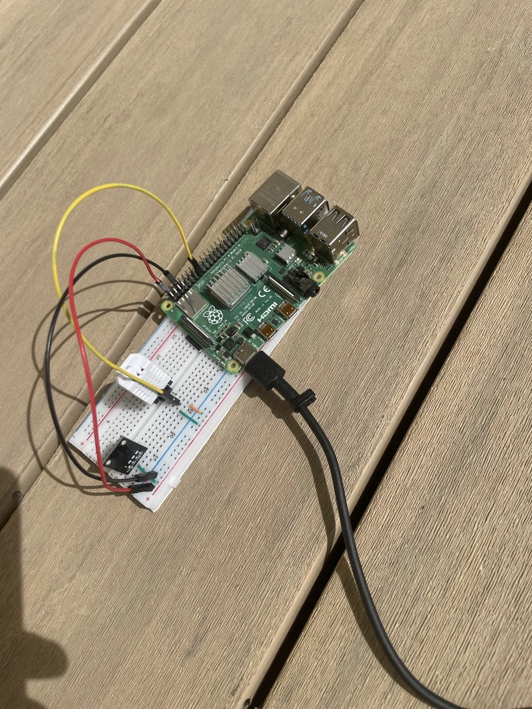

Individual project · Environmental sensing
Remote Weather Station
Built a Raspberry Pi weather station for my grandparents’ property in remote Canada.
- Platform
- Raspberry Pi
- Prototype
- Breadboarded sensor interface

My work
- Wired environmental sensors and set up the Raspberry Pi for local data collection.
- Worked through sensor integration, Linux setup and data handling for a remote property.